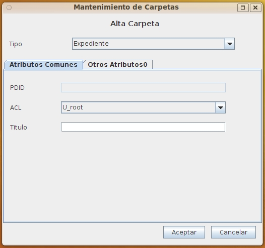
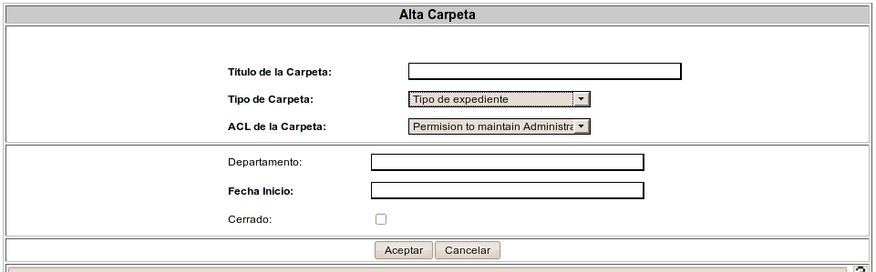

Este formulario permite crear una carpeta eligiendo el tipo, la seguridad e introduciendo todos los metadatos necesarios para un elemento del tipo elegido. Al elegir el tipo de carpeta., automáticamente apareceran en la zona corrspondiente los atributos de la carpeta
La carpeta se creará dentro de la carpeta actual.


Para crear una carpeta de forma sencilla eligiendo solo el nombre debe utilizarse: Añadir Carpeta
Los campos obligatorios para cada tipo de carpeta apareceran resaltados. Al situarse el cursor o ratón sobre cada campo, aparecerá un mensaje emergente o un texto en la banda de inferior del formulario con información sobre el campo y (en el caso de los campos de tipo fecha u hora) el formato esperado. Los campos de tipo fecha/hora deben ser valores válidos y seguir el formato esperado, en otro caso el campo se limpia y el valor se rechaza.
En caso de producirse un error (carencia de permisos del usuario, error de comunicaciones, fecha incorrecta, etc), la operación se cancela y se comunicará al usuario el motivo del error.